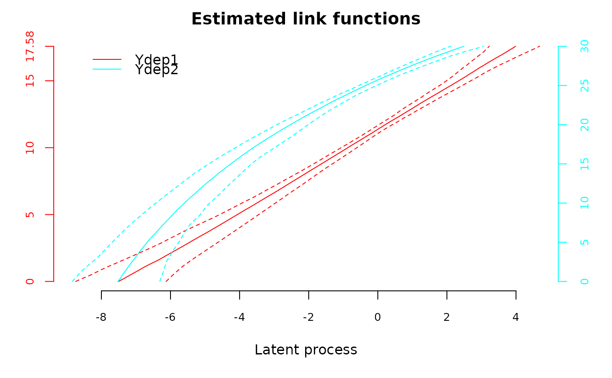

Confidence intervals for the estimated link functions from lcmm,
Jointlcmm and multlcmm
Source: R/predictlink.multlcmm.R
predictlink.RdThis function provides 95% confidence intervals around the estimated
transformation given in estimlink attribute of lcmm, Jointlcmm
and multlcmm objects. It can also be used to evaluate the link
functions at other values than those given in attribute estimlink of
lcmm, Jointlcmm or multlcmm object.
Arguments
- x
an object inheriting from classes
lcmm,Jointlcmmormultlcmm.- ndraws
the number of draws that should be generated to approximate the posterior distribution of the transformed values. By default, ndraws=2000.
- Yvalues
a vector (for a
lcmmorJointlcmmobject) or a matrix (for amultlcmmobject) containing the values at which to compute the transformation(s). Default to the values inx$estimlink.- ...
other parameters (ignored)
Value
An object of class predictlink with values :
- pred :
For a lcmm or Jointlcmm object, a data frame containing the
values at which the transformation is evaluated, the transformed values and
the lower and the upper limits of the confidence intervals (if ndraws>0).
For a multlcmm object, a data frame containing the indicator of the
outcome, the values at which the transformations are evaluated,the
transformed values and the lower and the upper limits of the confidence
intervals (if ndraws>0).
- object : the object from which the link function is predicted
Examples
# \dontrun{
## Univariate mixed model with splines link funciton
m14<-lcmm(Ydep2~Time+I(Time^2),random=~Time,subject='ID',ng=1,
data=data_lcmm,link="5-manual-splines",intnodes=c(10,20,25),
B=c(-0.89255, -0.09715, 0.56335, 0.21967, 0.61937, -7.90261, 0.75149,
-1.22357, 1.55832, 1.75324, 1.33834, 1.0968))
##Transformed values of several scores and their confidence intervals
transf.m14 <- predictlink(m14,ndraws=2000,Yvalues=c(0,1,7:30))
plot(transf.m14)
## Multivariate mixed model with splines link functions
m1 <- multlcmm(Ydep1+Ydep2~1+Time*X2+contrast(X2),random=~1+Time,
subject="ID",randomY=TRUE,link=c("4-manual-splines","3-manual-splines"),
intnodes=c(8,12,25),data=data_lcmm,
B=c(-1.071, -0.192, 0.106, -0.005, -0.193, 1.012, 0.870, 0.881,
0.000, 0.000, -7.520, 1.401, 1.607 , 1.908, 1.431, 1.082,
-7.528, 1.135 , 1.454 , 2.328, 1.052))
##Confidence intervals for the transformed values (given in m1$estimlink)
transf.m1 <- predictlink(m1,ndraws=200)
plot(transf.m1)

# }